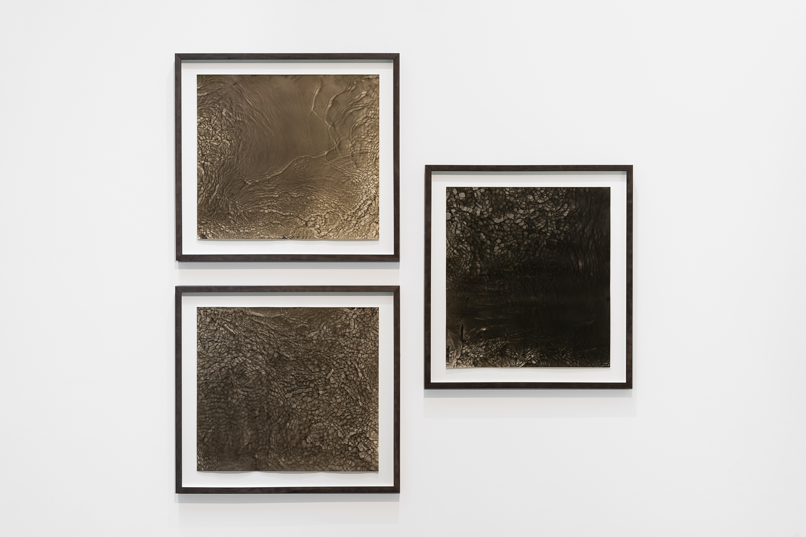

X̱á7elcha (Lynn Creek) Watergrams 2022. 20 x 24. silver gelatin prints.
 Installation view of Sidney Gordon, Dog Rose, Autumn Leaves and Red Flowering Current 1, 2 & 3 from X̱á7elcha (Lynn Creek) Watergrams (series), 20 x 22 silver gelatin prints. 2022, Photo by Michael Love.The light-sensitive surface is a direct canvas for material collaboration. My work, X̱á7elcha (Lynn Creek) Watergrams, focuses on using this method to give authorship to this river as we work in alliance with each other. By submerging photographic paper in the water and capturing direct prints of its refractions, we render what the human eye and traditional photographic practices would otherwise be unable to produce. This type of intervention calls for a holistic approach, assuring that every material and action I engage with interacts with the water as respectfully as possible. Through this process, I use location-specific materials: such as a developer made from surrounding blossoms, and river water as a stop bath. These photochemical alternatives alongside the natural forces and matter captured in the prints demonstrate how distinctive their interplay makes the images produced. This river is one I see as my kin, and through this practice, I acknowledge my position on this land as both a maker and a marker. X̱á7elcha (Lynn Creek), has a long history of surrounding settler development. With this work, I aim to bring forward a symbiotic relation that creates dialogue around this body of water beyond what's surfacely portrayed, and challenges viewers to investigate the footprints they leave through their daily habits. Project Assistants: Emil Vargas Tillie Roy Leo Mah Felicity Crisp Taliesin Mason McCrea
 Dog Rose, Autumn Leaves and Red Flowering Current 1 from X̱á7elcha (Lynn Creek) Watergrams (series), 20 x 22 silver gelatin prints. 2022
Dog Rose, Autumn Leaves and Red Flowering Current 1 from X̱á7elcha (Lynn Creek) Watergrams (series), 20 x 22 silver gelatin prints. 2022
 Dog Rose, Autumn Leaves and Red Flowering Current 3 from X̱á7elcha (Lynn Creek) Watergrams (series), 20 x 22 silver gelatin prints. 2022
Dog Rose, Autumn Leaves and Red Flowering Current 3 from X̱á7elcha (Lynn Creek) Watergrams (series), 20 x 22 silver gelatin prints. 2022
 Dog Rose, Autumn Leaves and Red Flowering Current 2 from X̱á7elcha (Lynn Creek) Watergrams (series), 20 x 22 silver gelatin prints. 2022
Dog Rose, Autumn Leaves and Red Flowering Current 2 from X̱á7elcha (Lynn Creek) Watergrams (series), 20 x 22 silver gelatin prints. 2022
Exhibitions: 2022 - repetition + difference, Emily Carr Student Exhibition, two-person show with David Macgillivray, ECU, Vancouver BC 2022 - Stranger than Fiction, curated by Emmy Lee Wall, Capture Photography Festival, Vancouver BC